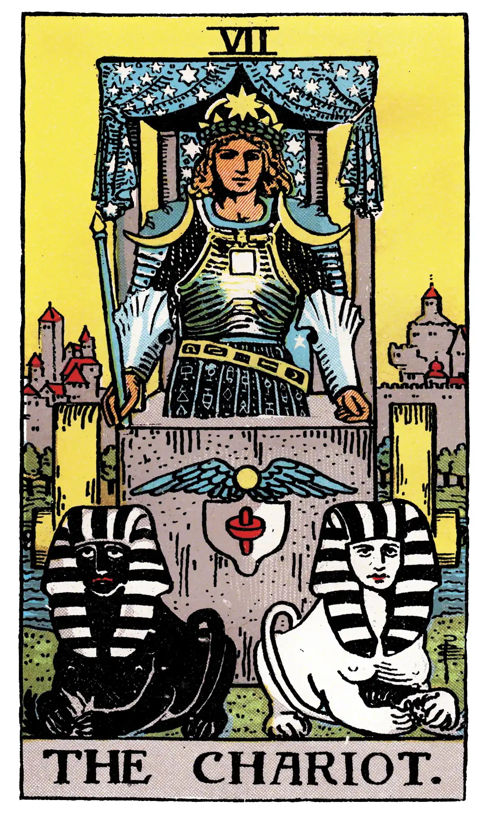

The Chariot

A.E.W.
Upright
Succour, providence; also war, triumph, presumption, vengeance, trouble.
Reversed
Riot, quarrel, dispute, litigation, defeat.
S.L.M.M.
Upright
Triumph, Victory, Overcoming obstacles
Reversed
Overthrown, Conquered by Obstacles at the last moment.
Description
An erect and princely figure carrying a drawn sword and corresponding, broadly speaking, to the traditional description which I have given in the first part. On the shoulders of the victorious hero are supposed to be the Urim and Thummim. He has led captivity captive; he is conquest on all planes--in the mind, in science, in progress, in certain trials of initiation. He has thus replied to the sphinx, and it is on this account that I have accepted the variation of Éliphas Lévi; two sphinxes thus draw his chariot. He is above all things triumph in the mind.
It is to be understood for this reason (a) that the question of the sphinx is concerned with a Mystery of Nature and not of the world of Grace, to which the charioteer could offer no answer; (b) that the planes of his conquest are manifest or external and not within himself; (c) that the liberation which he effects may leave himself in the bondage of the logical understanding; (d) that the tests of initiation through which he has passed in triumph are to be understood physically or rationally; and (e) that if he came to the pillars of that Temple between which the High Priestess is seated, he could not open the scroll called Tora, nor if she questioned him could he answer. He is not hereditary royalty and he is not priesthood.
Additionally
The Chariot. This is represented in some extant codices as being drawn by two sphinxes, and the device is in consonance with the symbolism, but it must not be supposed that such was its original form; the variation was invented to support a particular historical hypothesis. In the eighteenth century white horses were yoked to the car. As regards its usual name, the lesser stands for the greater; it is really the King in his triumph, typifying, however, the victory which creates kingship as its natural consequence and not the vested royalty of the fourth card. M. Court de Gebelin said that it was Osiris Triumphing, the conquering sun in spring-time having vanquished the obstacles of winter. We know now that Osiris rising from the dead is not represented by such obvious symbolism. Other animals than horses have also been used to draw the currus triumphalis, as, for example, a lion and a leopard.